얼굴 좌우 균형 분석 앱 — Futuristic Scan UI 전면 개편 세션
점수 숫자(FLabel/Gauge) · 랜드마크 점(WebView dot) · 게이지 원형 — 세 요소가 동일 임계값과 동일 RGB로 실시간 동기화됨
실기기 테스트에서 발견된 3가지 주요 문제와 각 해결 방법.
vx(x) = 1-(x*sx+ox) 로 x 미러 +
ctx.scale(-1,1) 캔버스 플립 = 이중 반전.
얼굴이 오른쪽으로 움직이면 메쉬는 왼쪽으로 움직이는 현상. vx에서 미러 제거, 캔버스 플립만 유지로 해결.
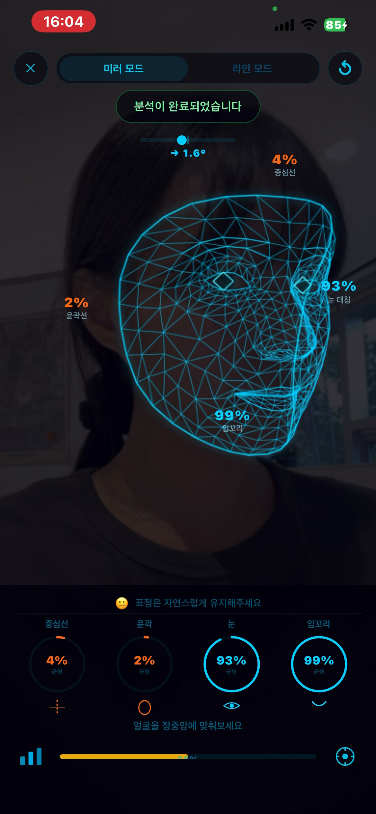
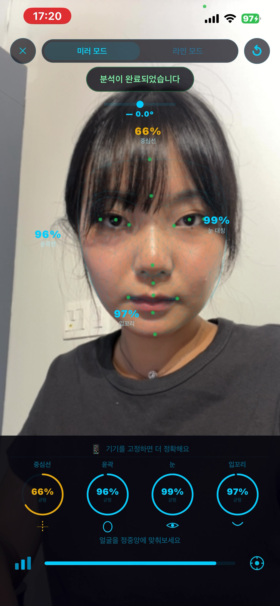
showMesh = isDone 조건으로 done 단계에만 완성 메쉬 표시, 스캔 중에는 subtle glow만.
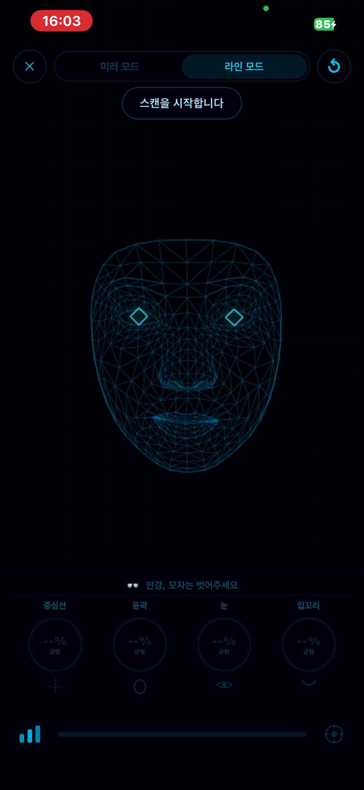
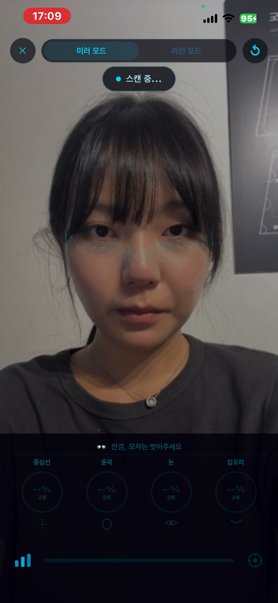
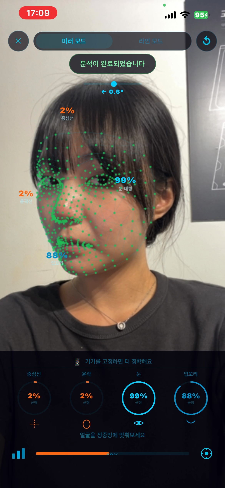
세 단계의 실기기 촬영 — Line 모드 idle / Mirror 모드 aligning / Mirror 모드 done
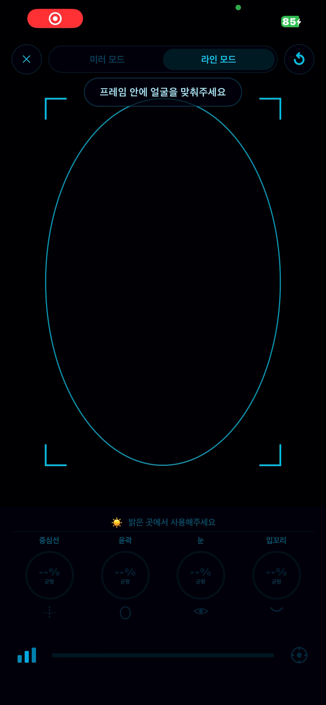
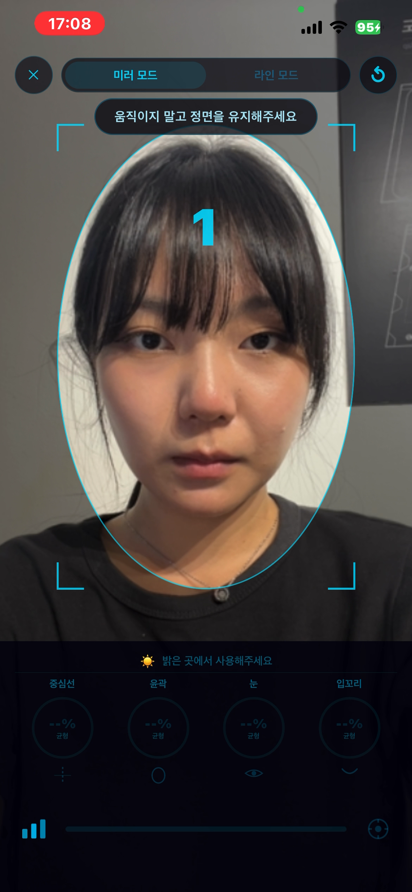
작업 전 요구사항 정의에 사용된 UI 스펙 레퍼런스. 오늘 구현의 기반이 된 시각 자료.
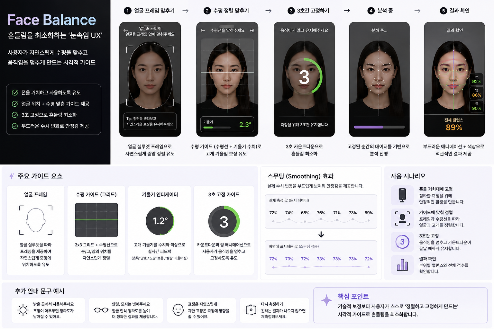
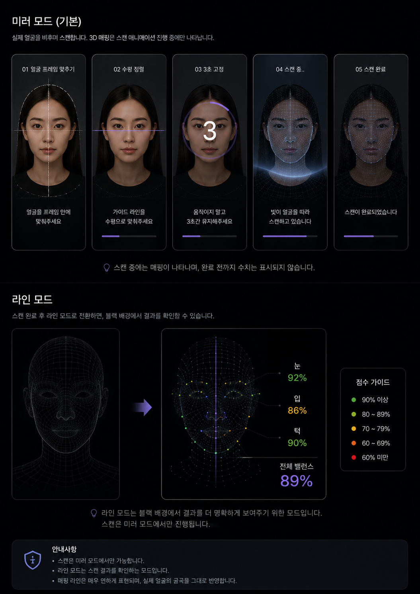
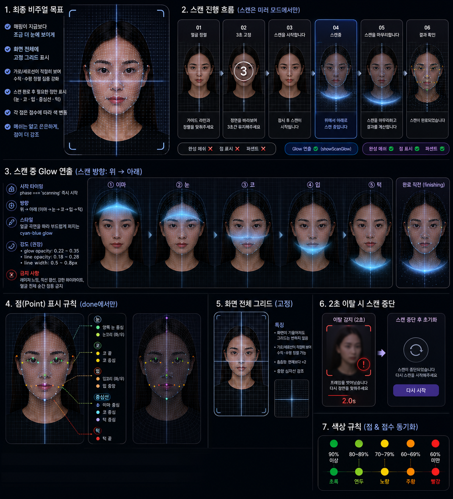
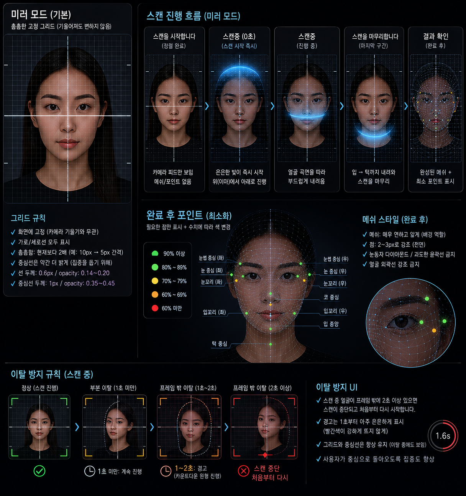
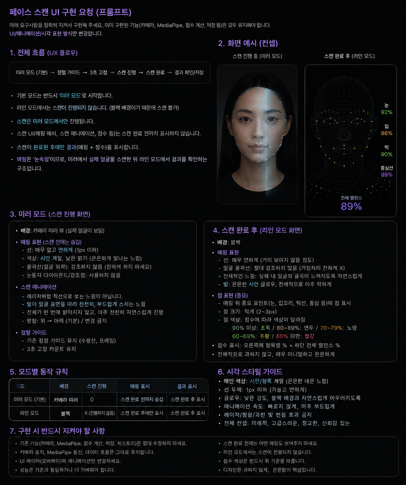